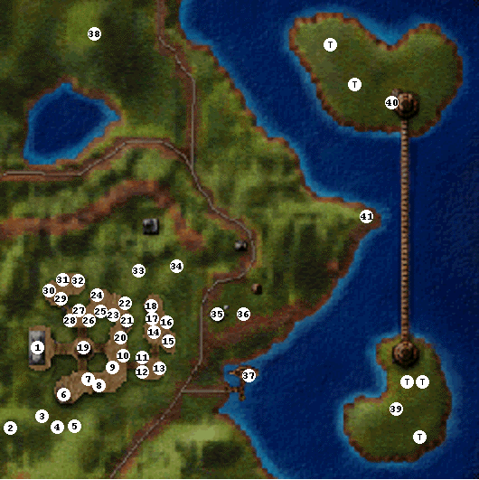

Tularean Forest

|
T) Treasure
1) Castle Navan 2) Altar - +10 Fire, Air, Water Resistance 3) Whitecap Residence 4) Windsong House 5) Treasurestone Home Shield Pedestal 6) Nature's Remedies (Healer) 7) Benjamin's Home 8) Stonewright Residence 9) Pierpont Townhall 10) Nature's Stockpile (Bank) 11) Hunter's Lodge (Blacksmith) 12) Buckskins and Bucklers (Armorsmith) 13) The Proving Grounds (Instructor) 14) Emeral Inn (Tavern) 15) Miyon's Home 16) Suretrail Home 17) Silverpoint Residence |
18) Bith Residence
19) Fountain - +50 Earth Resistance (Temporary) 20) Weatherson's House 21) The Bubling Cauldron (Alchemist) 22) Ottin House 23) Black House 24) Sower Residence 25) Natural Magic (Magician) 26) Kerrid Residence 27) Willowbark's Home 28) Fiddlebone Residence 29) Adept Guild of Earth 30) Master Guild of Fire 31) Master Guild of Air 32) Adept Guild of Water 33) Blueswan Home |
Quests: Main Quest: The War Bring Kerrid's Letter to the Faerie King Promotion: Arch Druid Promotion: Great Druid Promotion: Hunter Promotion: Ranger Lord Other Areas: Enemies: 34) Dotes Residence 35) Hu's Stallions (Stables) 36) Green House 37) Sea Sprite (Ship) 38) Tularean Caves 39) The Oldest Tree 40) Clanker's Laboratory 41) Contest of Might |